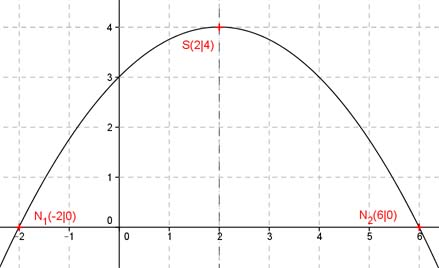

Aufgabe 98 Eine Parabel hat den Scheitelpunkt S(2|4) und schneidet die x-Achse an der Stelle 6. An welcher Stelle schneidet sie die x-Achse noch? Die Nullstellen (Schnittpunkte mit der x-Achse) liegen gleich weit von der Symmetrieachse der Parabel entfernt. Die Symmetrieachse geht durch die x-Koordinate 2 des Scheitelpunkts und verläuft parallel zur y-Achse. Der Punkt x = 6 liegt 4 Einheiten rechts von der Symmetrieachse. Die andere Nullstelle muss 4 Einheiten links von der Symmetrieachse liegen, also an der Stelle x = -2. Allgemeine Scheitelpunktform einer quadratischen Funktion: y = a(x - xS)2 + yS Scheitelpunkt (2|4) bedeutet xS = 2 und yS = 4 Schneidet die x-Achse an der Stelle 6 bedeutet: x = 6 und y = 0 (Nullstelle) In die allgemeine Form eingesetzt: 0 = a(6 - 2)2 + 4 0 = 16a + 4 |-4 16a = -4 |:16 a = -0,25 Funktionsgleichung: y = -0,25(x - 2)2 + 4 